- 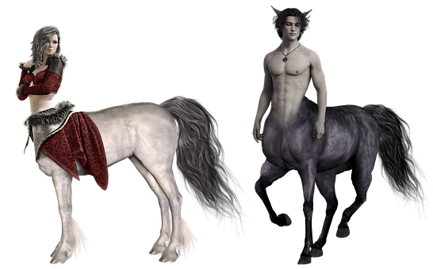
Centaur - 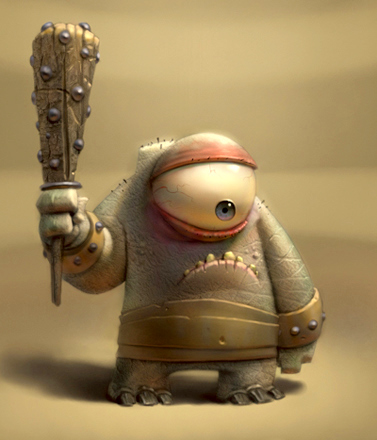
Cyclops - 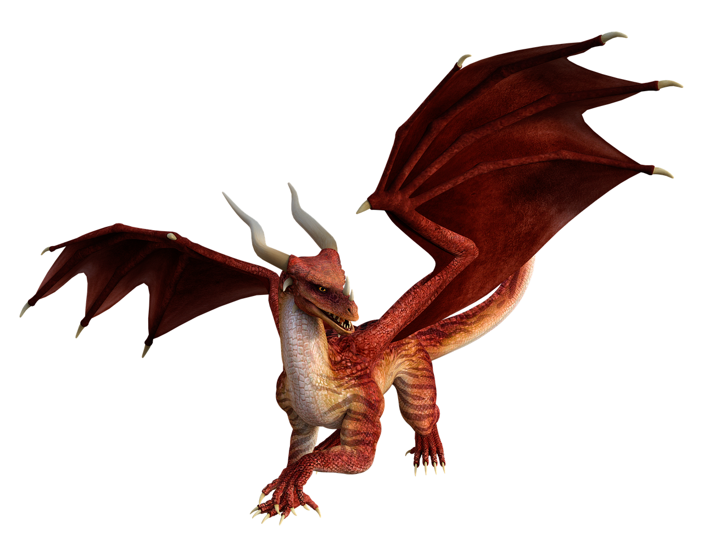
Dragon - 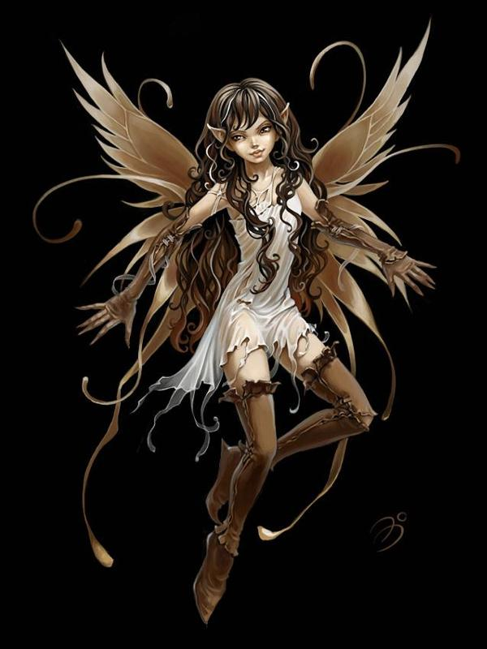
Fairy Griffin Kelpie 
Mermaid Vampire - 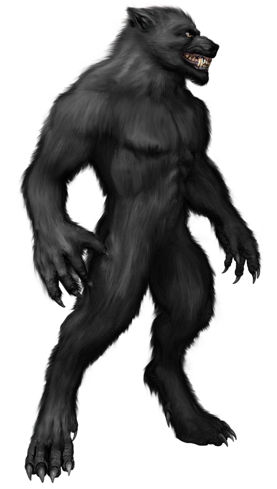
Werewolf - 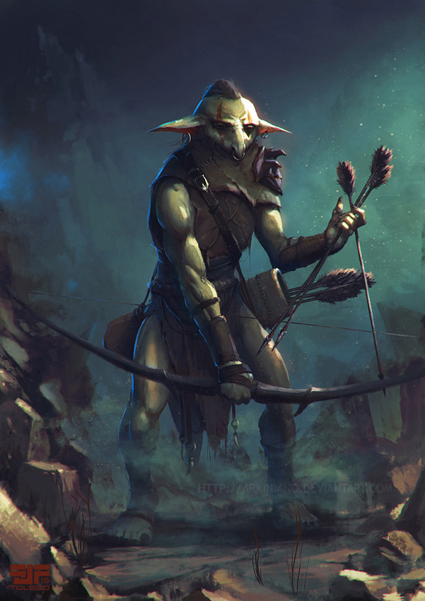
Goblin - 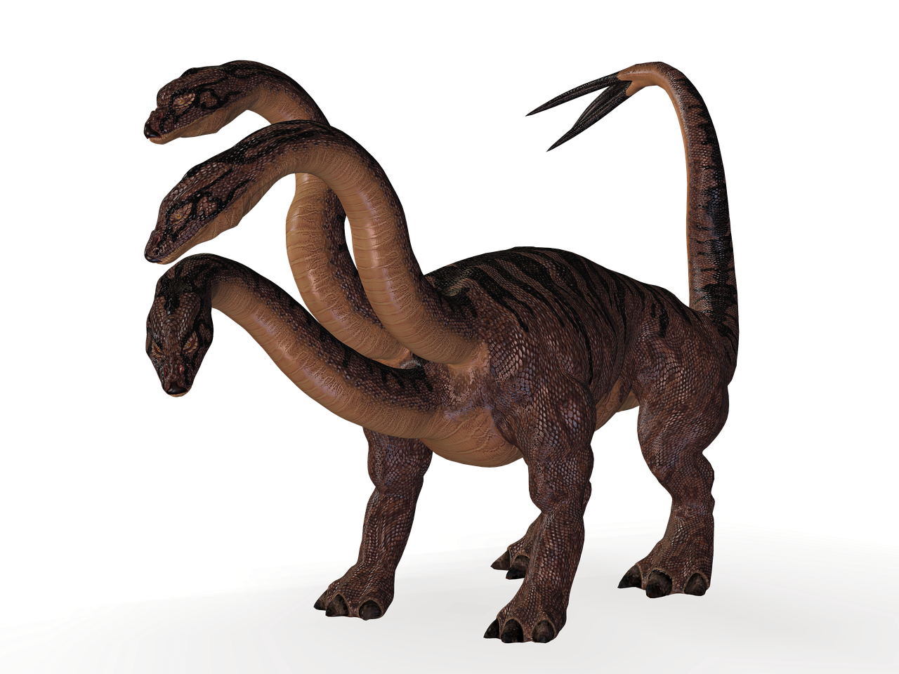
Hydra - 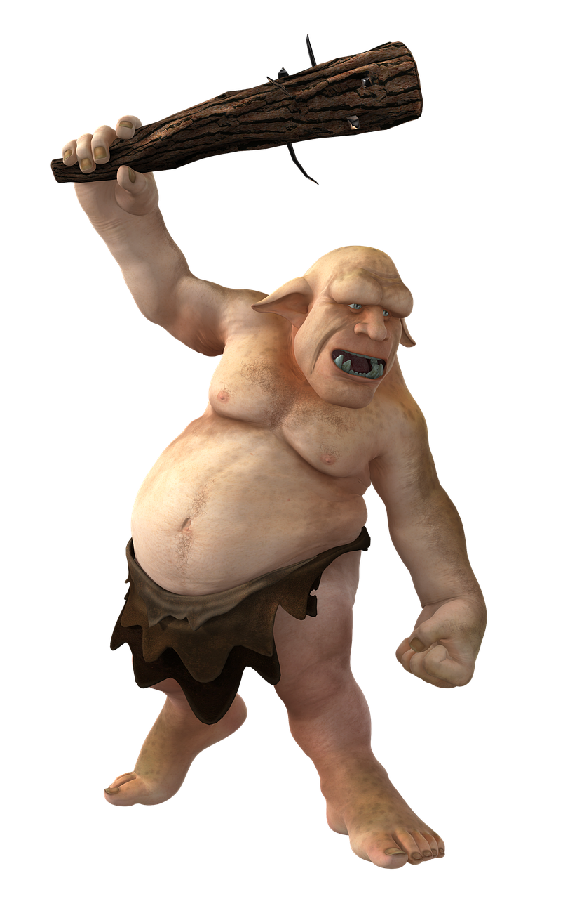
Troll - 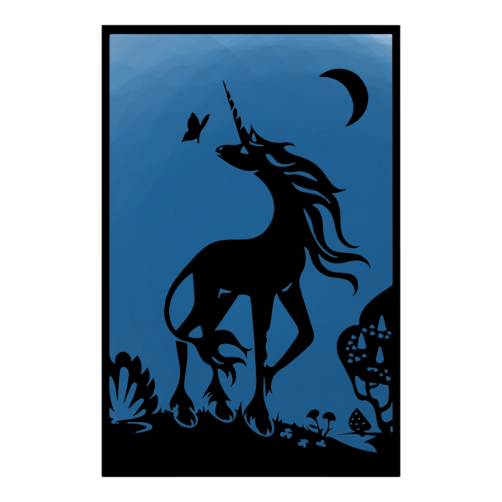
Unicorn - 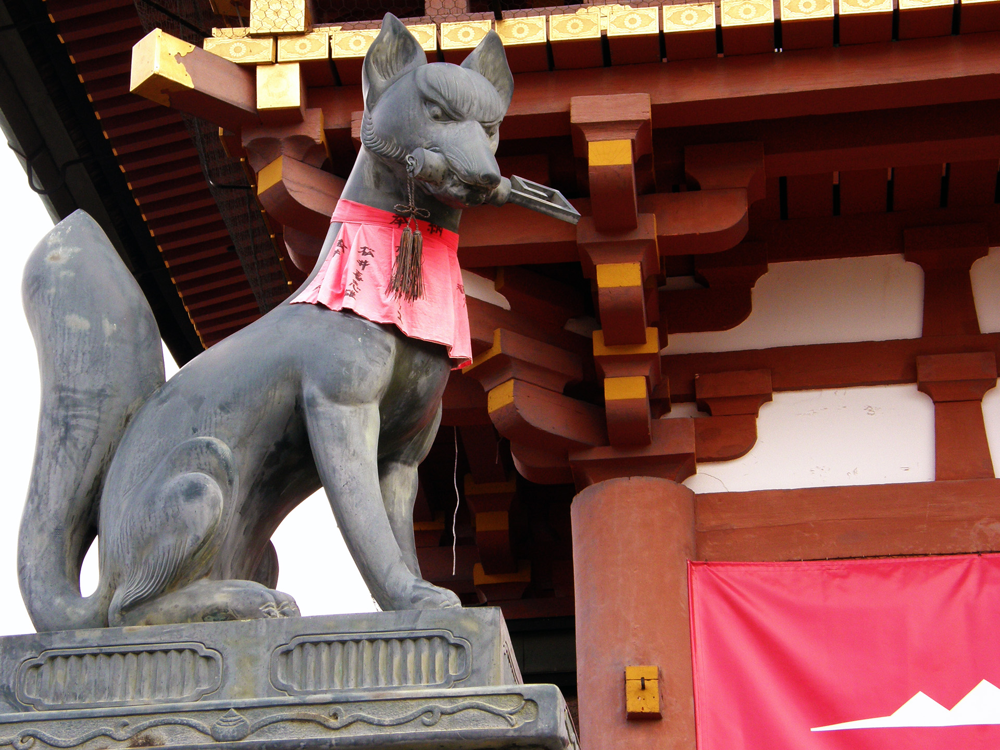
Kitsune - 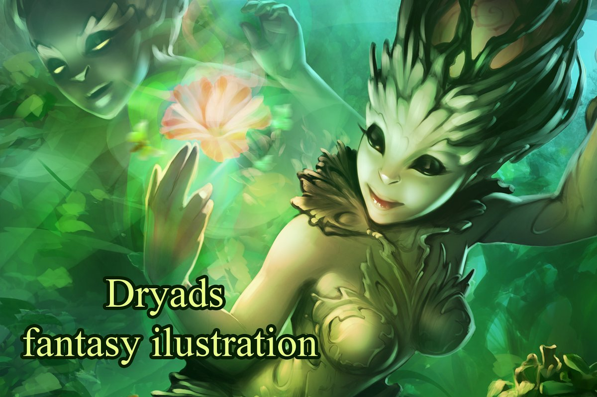
Dryad - 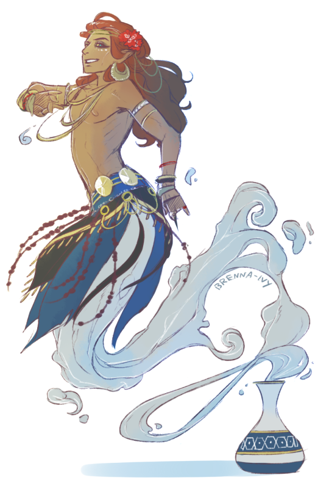
Genie - 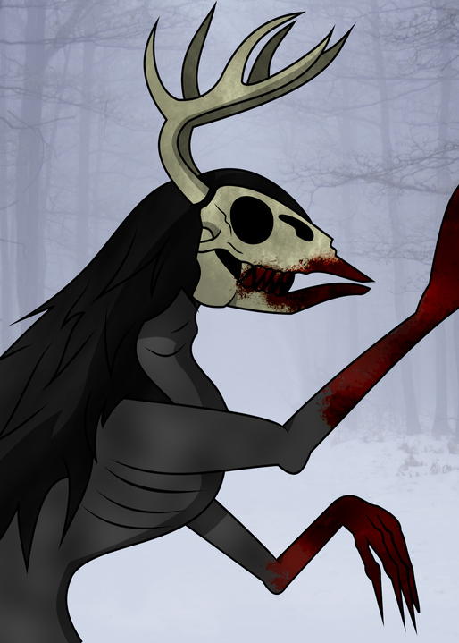
Wendigo - 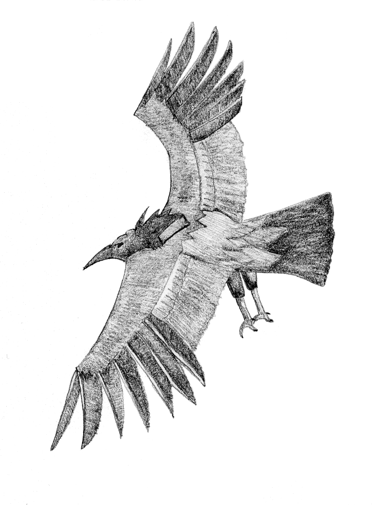
Thunderbird - 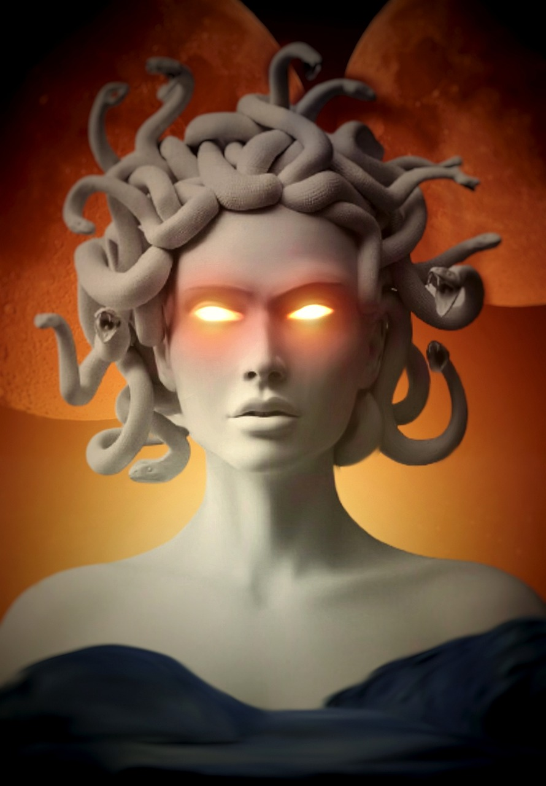
Gorgon - 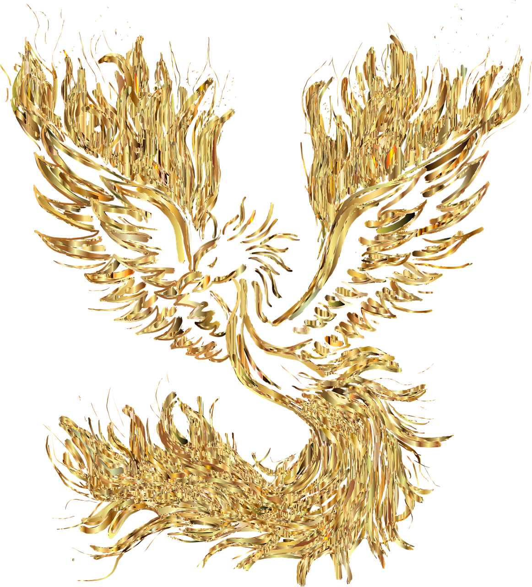
Phoenix
Centaurs originated in Greek mythology.
They have the body of a horse and the torso of a man.
Centaurs represented barbarism and chaos to the Greeks.
Chiron was the most well known Centaur and was a tutor for Hercules, Achilles and Jason.
Centaurs followed the Greek god Dionysus.
Cyclops originated in Greek mythology.
Cyclops are generally larger than a human and look humanlike in appearence. But with only 1 eye in the center of their face instead of two.
According to Greek mythology, Cyclops were a race of lawless creatures.
Cyclops were known to build and craft powerful weapons which they gave to different hero's.
They were known to have very poor depth perception.
Dragons did not orginate from one singular culture. They have appeared in many differing cultures.
Dragons have a large lizard like body, generally with wings. They have a tail have 4 legs.
In some cultures Dragons are known to fly and breathe fire.
Dragons are often found in lairs with gold and other valuables.
Dragons often appear very smart and live a very long time.
Faries originated in the Middle Ages in Europe and are found in Greek mythology.
Faries are described as tiny human-like creatures who have magical abilitiesIn folklore fairies rarely have wings and are usually described with wings in the Victorian artworks 'Banshees' are malevolent fairies who usually appear only to foretell a tragedy
Fairies were thought of as to be demons in Puritanism.
Faries are allergic to iron.
One of the earliest claims of contact with a fairy was recorded in 1907.
Griffins originated in western Asia and into Greece by the 14th century BCE
Usually appears to have a body of a lion with brown fur and tufted tail with the head, wings and forelegs of an eagle.
They are often found guarding treasure.
They can fly.
They symbolize intelligence and strength.
Kelpie's originated in Scotland.
The Kelpie is a shape shifting aquatic spirit of Scottish legend.
Kelpie's have been described as having a mermaid like tail when entering the water. The Kelpie is a shape shifting aquatic spirit of Scottish legend.
Kelpie's haunt rivers and streams taking shape of a horse.
They are able to summon floods.
Most people think of kelpies as creatures you should never cross paths with, while some people actually consider them to save children from drowning.
Earliest mentions from Syria 1000BC
Mermaids are generally depicted as female humans from the waist up with the lower half of a fish.
In sailor folklore mermaids can signify both good and bad luck.
It was frequent for a mermaid to be carved into the bow of a ship to appease the sea and bring good fortune to a voyage.
Mermaids are often confused with Sirens, as seen in Homer's Odyssey, though they are not the same creature.
Vampires originated in Medieval Europe.
A vampire is an undead human, who has previously died (often of the bite of another vampire), and has risen from the grave to feed on the blood of living humans.
Vampires fear holy symbols such as the cross, avoid garlic, and can be killed with a steak through the heart.
In the 18th century in Europe a mass panic arose in which even the governments of various countries were involved in digging up suspected graves of vampires and staking the corpses to keep them from rising.
Bram Stoker's Dracula was a novel published in 1897 that told one of the most famous vampire legends in history.
Werewolves appears to have originated in the Epic of Gilgamesh.
Werewolves are part human and part wolf, generally frozen somewhere in the middle of a transformation between the two.
Werewolves can only be injured by silver.
People who are werewolves seem as normal most days of the month, but transform into their bestial form on nights of the full moon.
Ancient Greeks and Romans believed lycanthropy could be cured by exhaustion and people believed to be werewolves were sentenced to long periods of physical labor.
Goblins come from several different European cultures.
Goblins are generally small with grotesque features such as warts.
One of the most famous depictions of Goblins is from Lord of the Rings.
Goblins fear and hate horses and dogs.
A group of Goblins is referred to as a horde and female Goblins are called Hags, Crones, or Goblettes.
Hydra's come from Greek mythology./p>
They are a giant headed snake like monster with upwards of 9 heads.
The most famous Hydra is the Lernaean Hydra of Greek myth.
Hydra blood is poisonous, and Hercules dipped his arrows in ones blood, which his wife used to kill him.
If you cut a head off the Hydra 2 more will grow to take its place.
Troll's originated in Scandinavian and Norse mythology.
Troll's often appear as large and ugly and lack intelligence.
Often times it is said Trolls are turned to stone if exposed to sunlight.
In folklore Trolls rarely help humans and often try to eat them.
It is said that Trolls can turn perfectly fine food rotten just by breathing on it.
The Unicorn comes from ancient Greek and Indus Valley civilizations.
Unicorns are horse-like and have a long horn coming from their head.
A Unicorns horn is known as an Alicorn.
It is said that Unicorns have the power to know when they are being lied too, and will kill a liar with their horns.
A Unicorn that can fly is known as a Pegasus.
Kitsune comes from Japan and literally translates to Fox.
In Japanese folklore Kitsune are smart, devious creatures, often with magical powers.
A Kitsune can transform itself to look like a human.
In some stories Kitsune can take control of a Human female and are known as Kitsunetsuki.
Kitsune sometimes cannot get rid of their tails when they transform into a human.
Dryads come from Greek Mythology.
They are a type of Nymph, usually depicted as a female who is part plant.
Dryads live as long as the tree they are connected to, if the tree dies they die.
Dryads are loyal to the Goddess Artemis.
As an infant, Zeus was looked after by several Dryads.
Genie's come from Arabic cultures.
A Genie, or Djinn is a magical spirit that is bound to a vessel.
Djinn delight in punishing humans for harm done.
The story of Aladdin comes from a Turkish folklore entitled One Thousand and One Nights.
If you free a Genie from its vessel it will grant you 3 wishes.
Wendigo's come from First Nation Algonquin tribes in the East Coast of Canada
Wendigo's can take control of people, to do this they give them a sickness known as Wendigo fever. This drives the person mad.
As a Wendigo ages it becomes more and more dangerous.
There is a real posychological disorder where people gain an appetite for human flesh. This is know an Wendigo Psychosis.
They feed on humans.
The Thunderbird comes from Native American mythology in the United States and Canada.
It is described as an enourmas bird with massive wings.
The flapping of its wings sounds like thunder and it can shoot lightning from its eyes.
There are stories of the bird picking up whales with its talons from the ocean.
It is a symbol of power and strength.
Gorgons come from Greek Mythology.
Gorgons were 3 female monsters which were all sisters. Stheno, Eurale, and Medusa.
They could turn people to stone by looking at them.
They had gold wings and snakes in place of their hair.
Two of the sisters, were immortal. The third, Medusa, was killed by Perseus using a shield as a mirror.
Phoenix's trace their roots back to Roman and Egyptian mythology.
They appear as a giant bird.
They could live for up to 500 years before dying and then being reborn.
They could breathe fire and were strengthened by the sun.
When close to death, they build a nest of fire and would be born again in about 3 days once they died.